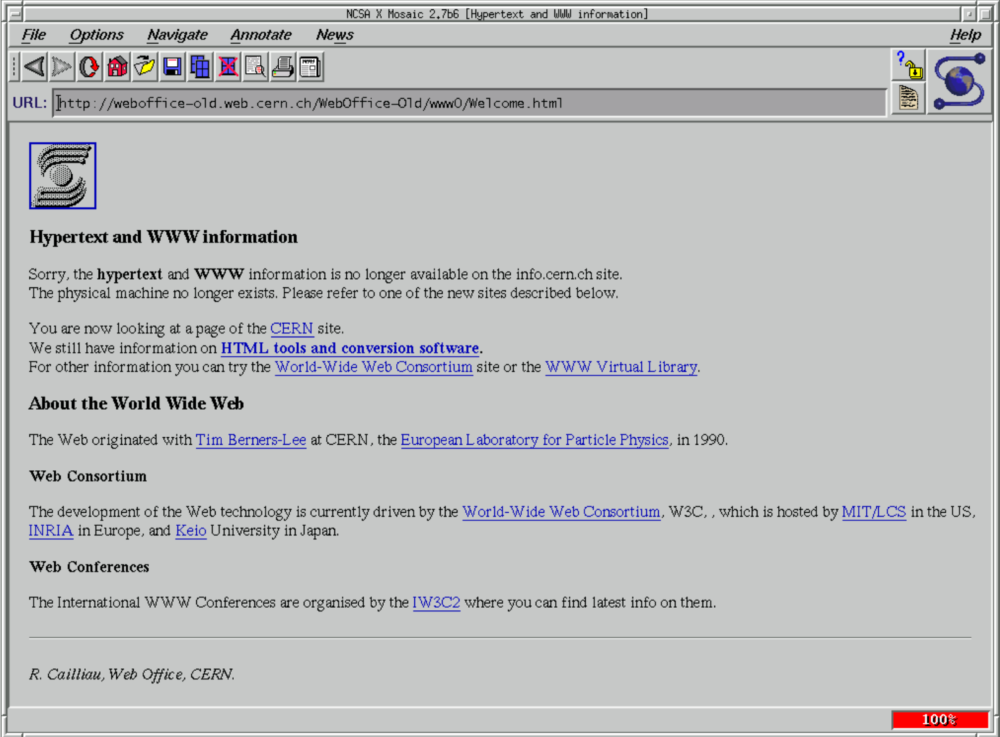

Utvecklingen av internet startade under ungefär 1958 med forskningsanstalten ARPA. Detta ledde till skapandet av ARPANET 1969 som sägas vara internets föregångare. Dock var tillgången till ARPANET begränsat till de akademiska institutioner och forskiningsoragisationer som hade ett kontrakt med försvarsdepartementet. På grund av begränsningarna skapades flera nätverk för att kunna dela information i större utsträckning. Internets födelse anses vara 1983 i och med att ARPANETS och Försvarsdatanätverket (Defense Data Network) ändrade till det då nya kommunikationsprotokollet TCP/IP vilket ledde till att olika typer av datorer i olika nätverk kunde kommunicera mellan varandra, till skillnad från innan kunde alla nätverk kopplas samman.
Internet skulle ge statliga forskare möjligheten att att dela information med varandra. Det var tänkt för att genom olika tekniker “experimentera” med datanät för att exempelvis kunna hantera avbrott bättre och ge möjligheter att undvika nätverksnoder som var utslagna. Eftersom det utvecklades under kalla kriget sägs det även att internet skapades för att kunna hantera ett kärnvapenangrepp.
ARPA är USA:s militära forskningsanstalt Advanced Research Projects Agency. Denna federala myndighet heter sen 1972 DARPA (Defense Advanced Research Projects Agency). De är till för att framställa teknologi till militära syften och kom att bli en viktig del av internets utveckling genom deras utvecklande av ARPANET.
Internets föregångare var ARPANET (Advanced Research Projects Agency Network) som skapades 1969 av ARPA (Advanced Research Projects Agency). Det utvecklades under kalla kriget och var det första nätverk som hade fungerande paket växling. Samma år som ARPANET skapades så lyckades man även få kommunikation mellan två datorer vilket var meddelandet “LOG” dock så kraschade den mottagande datorn så det allra första meddelandet blev därmed “LO”.
En centraldator, avser man en dator som skulle hantera all kommunikation mellan de enheter som var anslutna till nätet. Varje enhet var endast kopplad till centraldatorn, den centrala delen av stjärn-topologin (se bild nedan) vilket innebar att om den centrala delen skulle sluta fungera slutar hela nätverket att fungera. Detta ansågs såklart som osäkert och opålitligt vilket ledde till ideer och lösningar som resulterade i andra uppbyggnader av nätverk, exempelvis ARPANET och i sin tur internet som inte är kopplade till en centraldator.
I ett distribuerat nätverk så är samtliga nätverkstjänster och samordningsuppgifter jämt fördelade mellan servrar över ett nätverk. Till skillnad från ett centraliserat nätverk så används inte en enda central server där all databehandling sker utan delas upp av noder över nätverket. Den största fördelen med ett distribuerat nätverk är dess säkerhet. Påverkar någonting den centrala servern i ett centraliserat nätverk påverkar det hela nätverket. Genom att lagra systeminformationen i ett större antal noder med lika förutsättningar som sker i ett distribuerat nätverk blir stabiliteten och säkerheten mycket säkrare. Det bidrar också till att ett distribuerat nätverk har snabbare hastighet än ett centraliserat eftersom informationen är lagrad på flera ställen. Försöker exempelvis flera personer komma åt en server och den tyngs ned har det distribuera nätverket fördel med sin skalbarhet och kan upprätthålla hastigheten bättre än ett centraliserat nätverk.
WWW står för World Wide Web och är ett informationssystem som möjliggör åtkomst till dokument och andra resurser på internet. Utvecklingen av WWW startade år 1989 av Tim Berners-Lee och hans team på forskningsinstitutet CERN där de skapade protokollet HTTP (HyperText Transfer Protocol) som standardiserade kommunikation mellan servrar och klienter. Denna textbaserade browsern släpptes år 1992.
IP-nummer står för Internet Protocol är en samling siffror uppbyggd på fyra octet. En IP-adress identifierar/representerar datorer som är anslutnigna till ett nätverk samt DNS-servrar. IP-adresser tilldelas enheter på ethernet nätverk genom en router. Detta sker genom nätverksprotokollet DHCP. Det IP-adresser gör är att de underlättar trafiken mellan olika enheter eftersom alla enheter har en egen unik adress. Det skulle kunna liknas vid en hemadress.
TCP är ett internetprotokoll och står för “transmission control protocol” och hanterar datapaket (mindre enheter av data), hur detta delas upp samt sammanfogas. Man kan säga att det är ett “protokoll med kontroll” eftersom det är en säker hantering av datapaket till skillnad från exempelvis protokollet UDP (User datagram protocol) som är mindre säkert men har en snabbare överföring av datapaket. Man kan säga att syftet med TCP är att organisera data på så sätt att det säkerhetsställer att överföringen av data mellan servern och klient är säker och fullbordad. Att den är så säker beror på att TCP skickar datan bitvis och i mindre mängd än UDP samt har även felkontroll vilket UDP inte har. Båda dessa bidrar till säkrare dataöverföring.
Internet populariserades under mitten av 1990-talet genom att kommersiella operatörer i större uträckning gav ut förbindelser åt privatpersoner samt att WWW, alltså World Wide Web hade sitt genomslag.
Protokollet som används för att kommunicera över internet är TCP/IP som står för den grundläggande kommunikationen på internet. Övriga kommunikationsprotokoll är HTTP som arbetar med att överföra webbsidor på internet genom WWW samt SMTP som arbetar med överföringen av e-post.
HTML:s föregångare var SGML som var en standard för skapandet av språk som beskriver strukturen på dokument som sedan ska kunna behandlas av en dator. SGML kan man säga är föregångaren till både HTML och XML och SGML självt har sin grund på IBMs generalized markup language.
Gopher skapades av Mark P. McCahill 1991 och var ett nätverksprotokoll och menysystem som var textbaserat. Gopher användes för att skapa simplare nätverkssidor för sökningar över nätet och används till viss del fortfarande idag.
Några av de första webbläsarna var Mosaic (1993) samt Netscape (1994). Andra webbläsare som släpptes under ungefär samma tid var IBM WebExplorer (1994), UdiWWW (1995) och Internet Explorer (1995).
Datorer började användas mer och mer för privatpersoner under 1980-talet på grund av att man byggde mindre datorer så kallade persondatorer som var mycket billigare och mer lättanvända för allmänheten än stordatorer som används för större organisationer, varav en större produktion av persondatorer startades och såldes till privatpersoner.
Internet idag används till mycket olika saker och är mycket brett använt. Några populära användningsområden är kommunikation och åtkomst till information. Kommunikation kan exempelvis vara sociala medier, e-mail och chat rooms och så vidare där människor kan nå andra människor världen över. När det gäller åtkomsten till information finns bred åtkomst till digital information genom många olika applikationer, exempelvis World Wide Web.
En URL står för Universal Resource Locator och är en teckensträng i en komplett webbadress för en viss webbsida. Till skillnad från domänen är inte URL en webbsidas namn exempelvis www.hemsida123.se är en URL en speciell sida på webbplatsen, alltså www.hemsida123.se/nyheter/dagens.html till exempel.
HTML kom i mitten av 1990-talet, cirka 1993 medans CSS kom 1996 men slog igenom tidigt 2000-tal.
Syftet med CSS (Cascading Style Sheet) som är ett språk för presentationsstilen i dokument är att formatera och strukturera dokument i exempelvis typsnitt, färg och storlek på texten. Alltså så anger CSS hur informationen ska angivas samt styling.
XML står för eXtensible Markup Language och är ett märkspråk. Skillnaden mellan XML och HTML är att HTML visar data samt beskriver strukturen på webbsidan medans XML lagrar och överför data.Kort sagt kan man säga att XML står för exempelvis data och tabeller medans HTML står för webbsida dokument.
Det beror på vart felet ligger. Internet består av flera oberoende nätverk. Alltså kontrolleras och underhålls det av många olika människor, olika företag och regeringar. Beroende på vart felet med internet ligger kan olika åtgärder behöva göras. Om hypotetiskt sätt internet skulle stängas ner skulle många bli inblandade för att lösa problemet. Några sektorer som har stort ansvar över internet är regeringen tillsammans med både offentliga samt privata internetleverantörer även servicetekniker och dylikt skulle bli inblandade
Java uppfanns av James Gosling Sun Microsystems under tidigt 90-tal och presenterades 1995. Java har en stark koppling till internet eftersom den fungerar bra i den distribuerade miljön som internet har samt att det var en av de första program koderna som man kunde ladda ner och köra. Java var inte ursprungligen designat efter internet men Sun Microsystem hade ett fokus på nätverksprogrammering, alltså att kunna programmera över ett nätverk, som exempelvis internet. Java är en av de mest använda programspråken idag och används främst på serversidan framför klientsidan.
Applets, kan man säga står för “litet program” och en Java-applet är små applikationer i Java som tillhandahåller interaktiva funktioner till webbapplikationer. För att det ska räknas som en Java-applet måste den vara skriven i Java samt endast kunna köras i en webbläsare. En Java-applet är alltså ett litet program som med hög hastighet transporteras över webben.
Ett serverspråk är ett språk som används för att utveckla program som körs av en server, kort sagt ett programmeringsspråk som kan köras på en webbserver. Några exempel på serverspråk är PHP, Java och ASP.NET/C#.
Skriptspråket PHP (Hypertext Preprocessor) skapades av dansk-kanadensaren Rasmus Lerdorf 1995. PHP används främst på webbservrar i det syfte att förmå internetsajter med innehåll som är dynamsikt. Med dynamiskt innehåll avses innehåll som framställs från databas eller formulärdata från besökare på sidan. PHP jämförs ofta med ASP och JSP.
ASP står för Active Server Pages och skapades av Microsoft. Det är ett språk som används på serversidan inom webbutveckling för att implementera dynamiska webbsidor. JSP står för Java Server Pages och skapades av Sun Microsystems. Det är ett skriptspråk på serversidan som stöttar utvecklare att skapa dynamiska webbsidor genom exempelvis HTML och XML. JSP använder sig av Java-programmeringsspråk. Både ASP och JSP liknar varandra eftersom de både är skriftspråk på serversidan men har också några skillnader, exempelvis är JSP plattformsberoende medans ASP inte är det. JSP har även större säkerhet än ASP samt ett minnesläckageskydd. När det käller kompilering av kod är det endas JSP-kod som kompileras eftersom ASP-kod använder VB-script (Microsoft Visual Basic Scripting Edition) och är därmed ett tolkat språk.
Javascript är ett OOP-skriptspråk (objektorienterad programmering) som gavs ut 1995 av Brendan Eich. Javascript laddas ned samt körs på webbläsaren med hemsidan. Det är en av de centralaste delarna på WWW tillsammans med HTML och CSS.
 Amerikanen Mark Zuckerberg utvecklade Facebook under sin tid på
Harvard University och släppte plattformen år 2004.
Amerikanen Mark Zuckerberg utvecklade Facebook under sin tid på
Harvard University och släppte plattformen år 2004.
Svenska Niklas Zennström och danske Janus Friis skapade Skype. Det släpptes sensommaren 2003.
 Spotify skapades av svenskarna Daniel Ek och Martin Lorentzon 2006 men
lanserades två år senare 2008.
Spotify skapades av svenskarna Daniel Ek och Martin Lorentzon 2006 men
lanserades två år senare 2008.
Copyleft innebär fri licens. Detta avser material som inte har någon upphovsrätt, alltså att den som har upphovsrätten av exempelvis en bild eller dylikt beviljar fri användning, distribuering och modifiering av verket dock under de förutsättningarna att de varianterna/kopiorna ska gälla under samma licens när de sprids.
Några notabla copyleft-licenser är GNU General Public License (GPL) som var den första copyleft-licensen som används för allmänt bruk. Mozilla Public License som utvecklas och underhålls av Mozilla och angår öppen källkod. Free Art License som ger rätt att fritt kunna distribuera, kopiera och transformera kreativa verk. Creative Commons share-alike licensvillkor som innebär att om en kopia eller en anpassning görs av exempelvis ett verk ska släppas under samma licens som originalet. Alltså att man “delar lika” på licensen.
Bilden föreställer ett C vänd mot vänster med en cirkel omkring sig.
Creative Commons (CC) står för en icke-kommersiell organisation som startades 2001 av juridikprofessorn Lawrence Lessig, Hal Abelson samt Eric Eldred och stöds av Center for the Public Domain. Creative Commons har utvecklat CC copyleft-licenser med det syfte att stötta fria kulturella verk samt öppet innehåll. Detta sker genom att exempelvis tillhandahålla upphovsmän passande licenser för deras verk. En del av deras licenser är Copyleft vilket ger allmänheten större möjligheter och rätt att använda eller modifiera och så vidare än exempelvis upphovsrätten (Copyright) eller liknande licenser.
| Symbol | Namn | Betydelse |
|---|---|---|
| BY | Erkännande. Ger tillåtelse att sprida material om upphovsmannen anges. | |
| NC | Icke kommersiell. Ingen tillåtelse att användas i kommersiella syften. | |
| ND | Inga bearbetningar. Inga bearbetningar av verket är tillåtna. | |
| SA | Dela lika. Versioner av verket/materialet som har bearbetas får spridas med den förutsättningen att de endast sprids under samma licens som originalet. |
Det finns också kombinationer av dessa. Exempelvis by-nc som blir en blandning av erkännande och icke kommersiell, alltså att upphovsmannen måste anges och verket får inte brukas i ett kommersiellt syfte. Lägger man till ännu en, exempelvis by-nc-nd vilket skulle bli en blandning av de två ovanstående samt inga bearbetningar.
GDPR står för står för general data protection regulation eller dataskyddsförordningen. Detta är en bestämmelse inom Europeiska unionen som avser hur personuppgifter ska behandlas och hur öppet detta får hanteras. Detta rör exempelvis företag som hanterar personuppgifter. Syftet med GDPR är att få mer och säkrare skydd för människor vad hantering av personuppgifter, inom ett företag kan detta avse information om kunder och så vidare.
GDPR publicerades den 27 april 2016.
De största skillnaderna mellan GDPR och dess föregångare PUL (personuppgiftslagen) är framförallt personuppgiftsbehnadling och syftet med det. I och med GDPR så ska företag kunna visa syftet med de personuppgifter som samlas in, alltså vad de ska ha dem till. PUL har mer ett fokus på vad som händer eller görs med personuppgifterna när den redan är registrerad. En annan viktig skillnad är att ett dataskyddsombud är nödvändigt för företag, organisationer eller myndigheter som har hand om personuppgifter enligt GDPR, någon som ansvarar speciellt för dataskyddsregler. Detta var inte aktuellt under lagen om PUL. En anmälan till datainspektionen inom 72 kom att bli relevant i och med GDPR ifall säkerhetsproblem skulle inträffa, exempelvis dataintrång där personuppgifter kan komma till skada. Då bör även de personerna som överlämnat sin information upplysas om detta. Till skillnad från PUL så räcker det inte längre att företaget bara meddelar att uppgifter har registrerats utan nu har man rätt till att få ut uppgifter som vi själva lämnat och kunna föra över dessa uppgifter till en annan verksamhet. Detta brukar kallas för dataportabilitet. Skulle de va så att de regler som GDPR har satt upp inte följs kan detta resultera i sanktionsavgift, vilket är en förändring PUL.
Det finns några förhållningssätt enligt GDPR när det gäller att lagra personuppgifter:
- Ändamålet för lagringen. Varför lagras dem?
- En rättslig grund. Vad för rättslig grund stödjer företaget/organisationen osv för att kunna samla in uppgifter?
- De registrerade måste informeras om varför uppgifter samlas in.
- Rätt personuppgifter. Finns det uppgifter som samlas in som inte är nödvändiga?
- Personuppgifterna ska skyddas. Har obligatoriska säkerhetsåtgärder eller riskanalys genomförts?
- Uppgifter som inte längre behövs ska raderas om de inte längre behövs för ändamålet.
- Det ska synas att det går rätt till. Personuppgift Behandlingar och beslut och dylikt ska dokumenteras och riktlinjer inom organisationen angående personuppgifter och dataskydd ska finnas
Det första att man måste tänka på är i vilket syfte bilden ska användas. Det gäller det att ha koll på eventuell upphovsrätt, linciens samt upphovsman. Bilder kan få användas i privat bruk men används de i ett kommersiellt syfte anses det som olagligt. Man måste alltså ha tillåtelse att använda bilden. Vissa bilder får användas men kanske inte hur som helst, exempelvis Creative Commons dela lika villkor där bilden kan användas men inte utan att samma regler gäller för kopian som originalet.